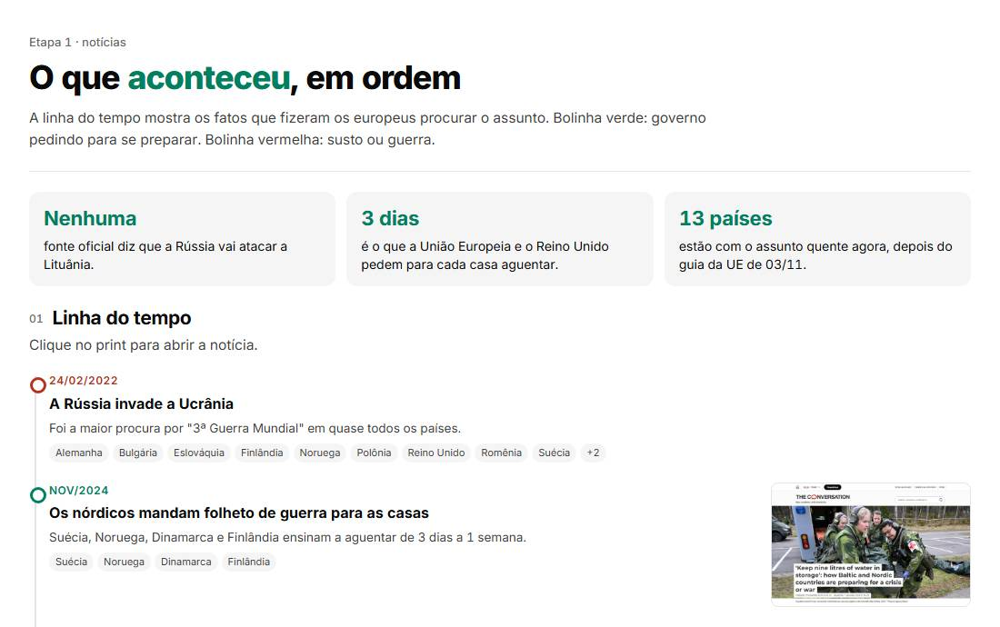
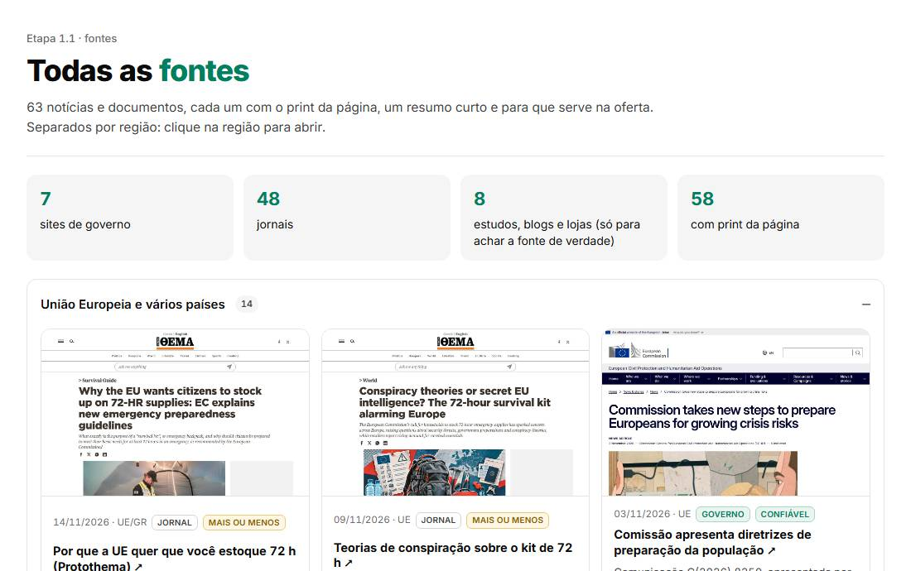
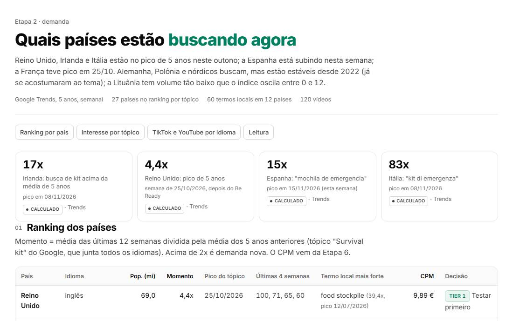
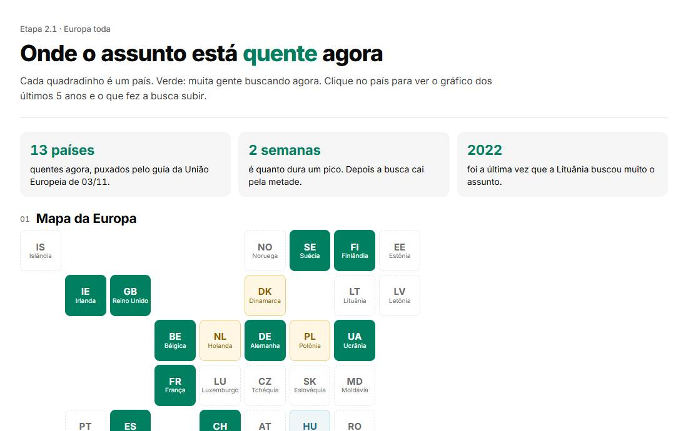
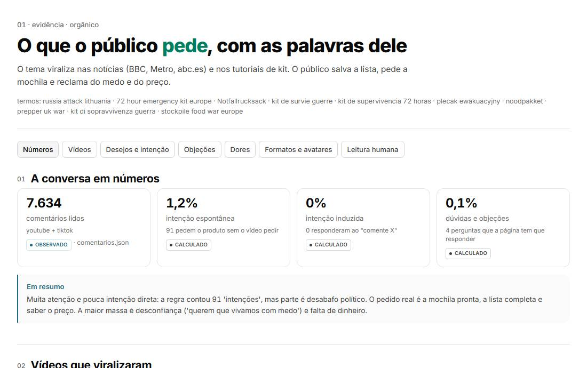
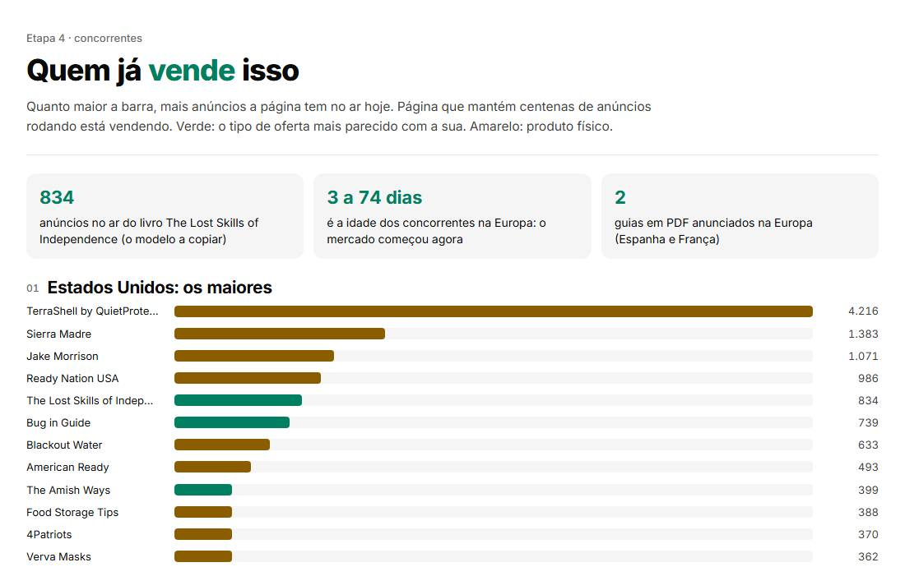
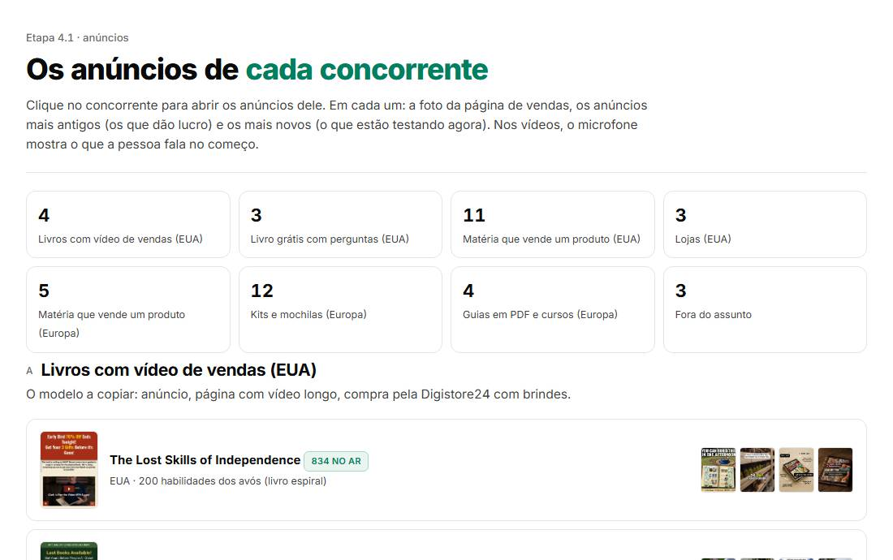
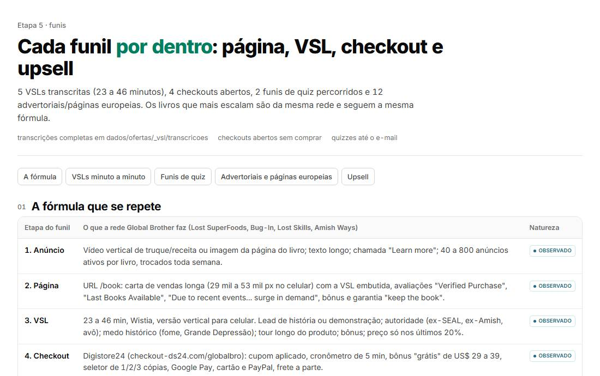
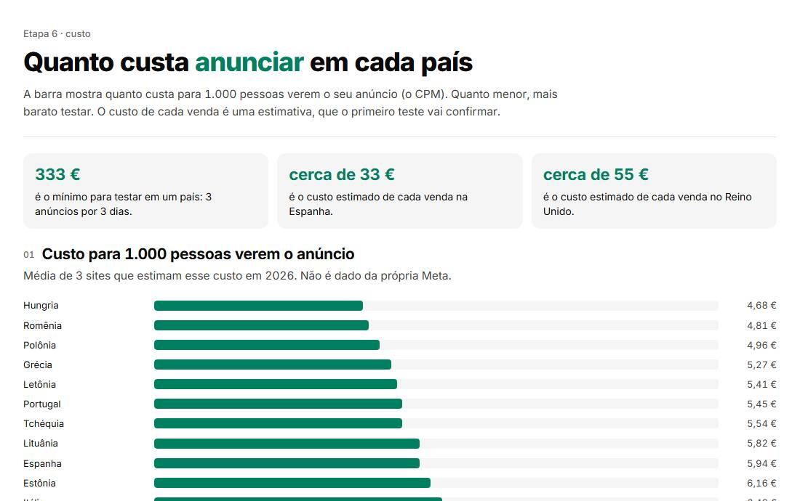
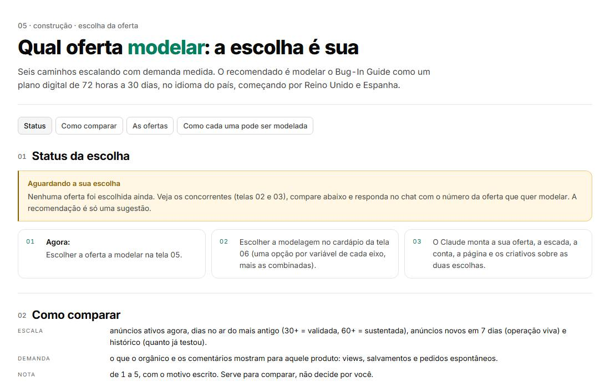

A pesquisa em 7 etapas
Siga na ordem. Os cartões cinza aprofundam a etapa de cima.

E1
Notícias
Linha do tempo do que aconteceu.

E1.1
Todas as fontes
63 notícias com print e resumo.

E2
Procura nos países principais
Quanto cada país busca e o que viraliza.

E2.1
Mapa da Europa
38 países: quem está quente agora.

E3
O que as pessoas dizem
Pedem mochila, lista e preço. Não gostam de medo.

E4
Concorrentes
Quem tem mais anúncios no ar.

E4.1
Anúncios por concorrente
45 concorrentes, 233 anúncios.

E5
Páginas de vendas por dentro
Vídeos de vendas minuto a minuto.

E6
Quanto custa anunciar
Custo por país e verba de teste.

E7
Escolha
Você escolhe o que vender e onde.
pastasNo computador, dentro de 01-pesquisa: criativos-por-concorrente (vídeos e uma ficha de cada concorrente), fontes (todas as fontes em texto) e MAPA-DA-PESQUISA.txt (o que tem em cada pasta).